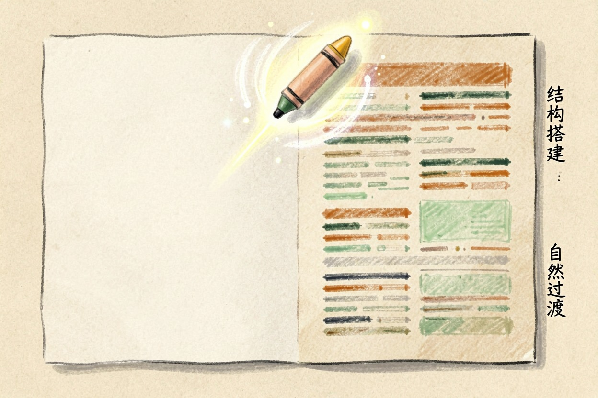
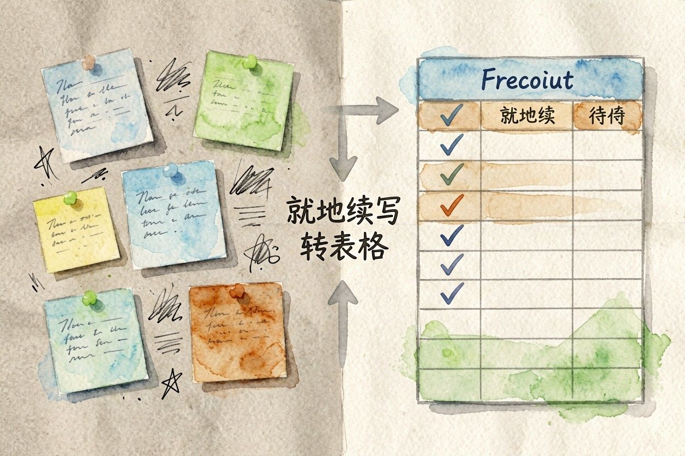
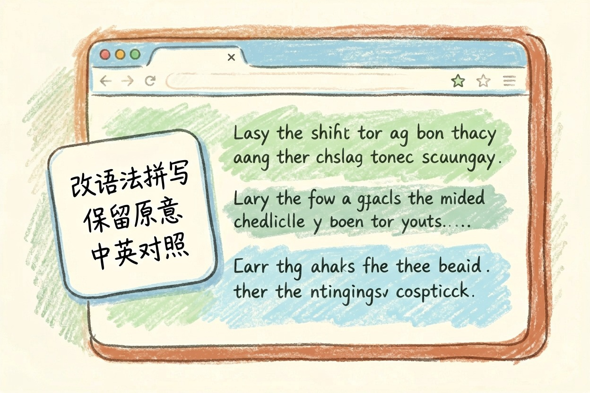

AI 写作工具哪个好用？7 款按写作类型选
生成型工具做校对很糟，校对型工具做生成更糟，先按写作类型对号入座，再挑具体工具。
ai写作工具哪个好用是本文的核心主题，下面详细介绍如何使用。
AI 写作工具哪个好用？先问你要写的是什么

AI 写作工具哪个好用，这个问题问偏了。写作不是一件事，至少是四件：从零生成长文、中文校对润色、在文档里边写边整理、英文表达修正。工具也是按这四类分的，照着排行榜从上往下挑，必然踩坑。先对号入座，再挑工具。
| 你要做的事 | 工具类型 | 对应工具 |
|---|---|---|
| 从零写长文 | 生成型 | Claude、ChatGPT{:target="_blank"}、豆包 |
| 中文稿挑错润色 | 校对型 | 秘塔写作猫、火山写作 |
| 边写边整理资料 | 文档内嵌型 | Notion AI |
| 英文邮件与论文 | 英文润色型 | Grammarly{:target="_blank"} |
从零生成长文：Claude、ChatGPT、豆包
需要一篇完整初稿，用生成型。Claude 的长文结构最稳，段落之间过渡自然，适合写方案、剧本、深度稿。它有免费额度，但国内访问需要额外网络条件。ChatGPT 通用性最好，能顺手处理表格和图片，门槛同样卡在网络。题材杂、不想换工具的人选它。
想在国内打开就写，豆包门槛最低，手机端也顺手，常规使用免费。这三款有个共同短板：擅长「造」，不擅长「挑错」。让它们校对你已经写好的稿子，往往会把对的句子一起改掉。
中文校对与润色：秘塔写作猫、火山写作

稿子已经写完，只想让它更干净，就该换校对型。
秘塔写作猫会标出错别字、语法问题、标点误用和敏感表述，每处改动都摆在你面前，不会偷偷重写你的句子。火山写作在扩写、缩写、语气调整上更顺手，也支持中英互改。一段话要改出几个版本时省事。
两款都有免费额度，国内直接可用，具体额度以官网当前说明为准。短板也一样明显。让它们从零写一篇长文，输出平淡而且偏短，比不过生成型。
文档内写作与整理：Notion AI

关于ai写作工具哪个好用，建议结合实操理解，多看多试。
---
英文写作：Grammarly 与它的省钱替代
英文邮件、论文摘要、求职信，Grammarly 仍然最省心。浏览器插件随处可用，免费版能改基础语法和拼写，高级改写要付费。
补充：ai写作工具哪个好用的详细用法可参考上文步骤。
补充：ai写作工具哪个好用的详细用法可参考上文步骤。
补充：ai写作工具哪个好用的详细用法可参考上文步骤。
预算为零，直接把英文段落丢给 DeepSeek{:target="_blank"} 或豆包也够用。关键是把要求写死。下面这段可以直接套：
总之，掌握 ai写作工具哪个好用 的使用方法对于提升工作效率至关重要。
你是英文写作编辑。请修改下面这段英文：
1. 只改语法、拼写、搭配和标点，保留我的原意和句子顺序；
**Q: ai写作工具哪个好用 免费吗？**
A: 大多数工具提供基础免费额度，具体以官网当前说明为准。
ai写作工具哪个好用的最佳实践见上文详细步骤，别错过核心要点。
ai写作工具哪个好用 代码示例
# ai写作工具哪个好用 使用示例
def example():
return "ai写作工具哪个好用"
print(example())别依赖 AI 的输出而不加核实。ai写作工具哪个好用 的结果需要人工检查，以防错误或过时信息。 !尾图核心要点回顾
{kind=link}
本文信息核对于 2026-08-04。AI 产品的价格、免费额度与功能变动频繁，实际以各工具官网当前说明为准。